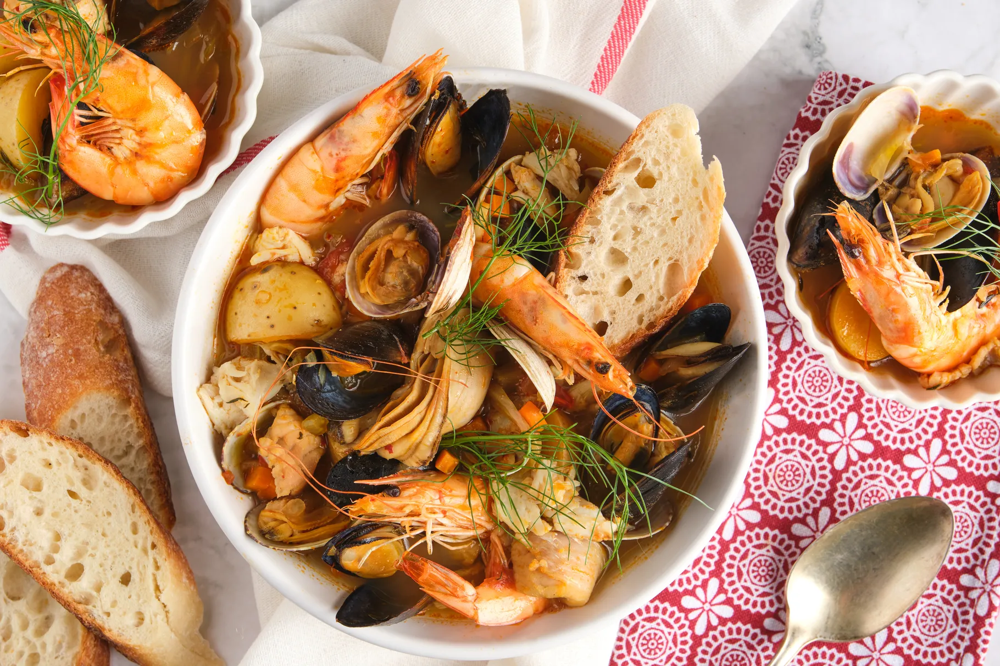

Bouillabaisse is a traditional Provençal seafood stew originating from the port city of Marseille. This luxurious dish features an aromatic broth infused with saffron, fennel, and orange zest, filled with a variety of fresh fish and shellfish. Traditionally served with rouille (a garlicky saffron mayonnaise) and crusty bread, it's a celebration of Mediterranean flavors.
Ingredients
- 2 pounds mixed firm white fish (such as cod, halibut, sea bass), cut into chunks
- 1 pound shellfish (mussels, clams, shrimp)
- 1/4 cup olive oil
- 2 leeks, white and light green parts only, sliced
- 1 large onion, chopped
- 4 cloves garlic, minced
- 1 fennel bulb, chopped
- 1 orange, zested
- 2 tablespoons tomato paste
- 1 can (14 oz) diced tomatoes
- 4 cups fish stock
- 1/2 cup dry white wine
- 1 pinch saffron threads
- 2 bay leaves
- 1 teaspoon dried thyme
- Salt and freshly ground black pepper
- Fresh parsley, chopped, for garnish
- Crusty French bread, for serving
Preparation
This iconic Mediterranean fish stew requires careful preparation of the broth and proper timing when adding the seafood. The result is a fragrant, colorful dish that captures the essence of southern French coastal cuisine.
Chef's Tips
- Use the freshest seafood possible for the best flavor.
- Don't skip the saffron - it's essential for authentic flavor.
- Add the seafood in stages, starting with fish that takes longest to cook.
- Serve with traditional rouille sauce for an authentic experience.